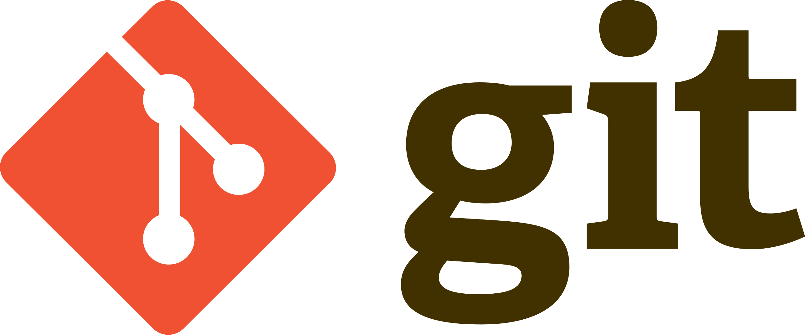
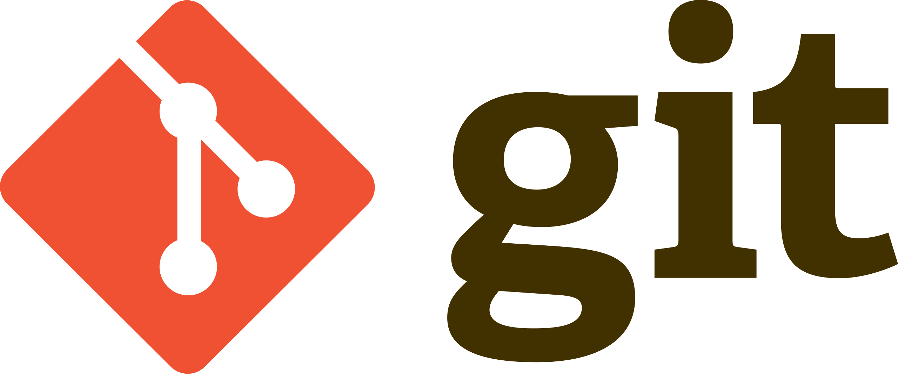

About me
Hello, I'm Ky Thai
I'm a person who is really passionate about Web Development because I can create cool websites by combining the coding and design aspects. Moreover, Web Development provides me a chance of utilizing AI in repeated tasks and using both of my imagination as well as logical thinking, which makes this industry will never be boring for me. I built this portfolio entirely from scratch to showcase my skills.


 
